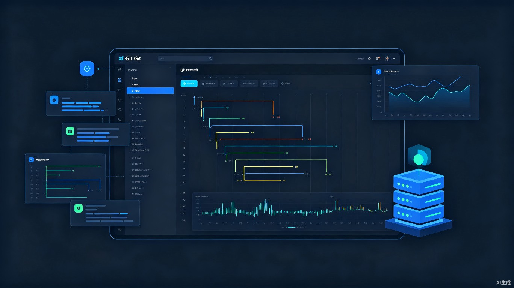

GitRepos Manager
一款支持远程管理的现代化 Git 桌面客户端，让多仓库协作变得轻松高效

创意概述
从开发者的真实痛点出发，重新定义 Git 桌面管理体验
想解决什么问题
目前市面上的 Git 桌面管理器普遍老旧，而且最致命的是无法远程管理 Git 仓库。例如，在调试机器人项目时，一个项目往往包含多个子仓库，修改代码后需要逐个提交，效率极低。此外，多人协作调试时，提交者信息也需要频繁切换，现有工具无法便捷处理。
为什么会想到做这个
此前开发过一款基于 Flutter 的程序，界面设计非常精美。受此启发，希望将 美观的 UI 设计与 Git 仓库管理功能深度融合，既能高效管理远程仓库，又能提供赏心悦目的操作体验，从而提升整体工作效率。
大概是什么产品
一款可在 Windows 和 Ubuntu 系统上运行的桌面应用程序。它提供可视化的 Git 仓库管理界面，支持远程仓库操作、多仓库批量管理、提交信息快速切换等功能。
目标用户及痛点
精准定位开发者群体，深入理解实际工作场景中的管理困境
Git 开发者
日常使用 Git 进行版本管理的软件开发者，需要频繁查看提交历史、切换分支、管理多个仓库。
远程调试工程师
需要远程调试机器或设备的开发者，仓库位于远程服务器，无法直接在本地操作。
团队协作成员
多人共享调试环境的团队成员，需要频繁切换提交者身份，管理复杂的协作流程。
多仓库项目维护者
负责包含多个子仓库的大型项目，需要批量操作、统一视图来监控所有仓库状态。
使用场景
在对 Git 仓库进行日常管理时需要使用 — 包括代码提交、分支切换、历史查看、冲突解决、远程同步等操作。特别是在远程服务器上的仓库管理场景下，现有工具几乎无法满足需求。
当前痛点
目前开发者只能选择 命令行操作 或 功能简陋的传统 GUI 工具，两者都非常不便。命令行需要记忆大量指令，容易出错；传统 GUI 界面老旧、功能单一，更不支持远程仓库管理。
- 传统 Git GUI 界面陈旧，用户体验差
- 无法直接管理远程服务器上的 Git 仓库
- 多仓库项目需要逐个操作，效率低下
- 提交者信息切换麻烦，协作成本高
- 缺乏可视化的仓库状态和分支管理视图
价值与意义
通过现代化设计和远程管理能力，为开发者带来实质性的效率提升
效率提升
通过 可视化界面，开发者可以一目了然地查看所有仓库状态、分支结构和提交历史。远程仓库管理功能让不在本地的工作流变得无缝衔接，大幅缩短操作时间。
商业价值
随着使用人数的增长，产品可以通过 非侵入式滚动条广告 等方式产生商业效益。核心功能免费使用，确保开发者群体的高接受度；广告模式轻量自然，不影响核心使用体验。
长远来看，产品还可拓展为 企业级 Git 管理平台，提供团队协作、权限管理、代码审查等高级功能，形成可持续的商业闭环。
核心功能亮点
围绕远程管理与多仓库协作，打造差异化竞争力
远程仓库直连
通过 SSH 或 HTTPS 直接连接远程服务器上的 Git 仓库，无需先将代码拉到本地即可执行提交、推送、拉取等操作。
多仓库批量管理
一个项目视图内聚合所有子仓库，支持批量提交、批量推送、统一查看变更状态，告别逐个仓库切换的低效操作。
提交者快速切换
预置多套提交者信息配置，一键切换身份，特别适合多人共用调试机器或设备时的协作场景。
可视化分支图谱
采用现代化设计呈现提交历史和分支关系，直观清晰，帮助开发者快速理解项目演进脉络。
跨平台原生体验
基于 Flutter 构建，在 Windows 和 Ubuntu 上均提供流畅、一致的原生桌面应用体验。
安全连接管理
内置 SSH 密钥管理、凭据安全存储，保障远程仓库连接的安全性与便捷性。